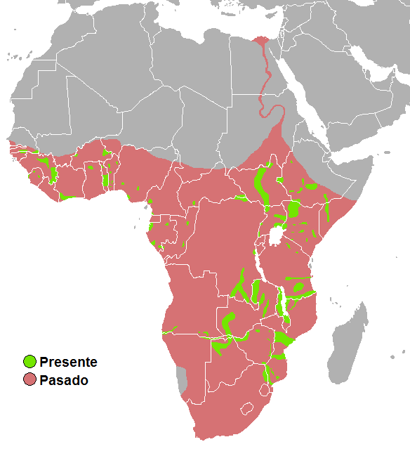

O hipopótamo é um mamífero semiaquático de grande porte, nativo da
África, conhecido por sua aparência robusta e seu comportamento
agressivo. É um dos maiores animais terrestres do mundo, podendo
chegar a pesar mais de 3.000 kg e medir até 4 metros de comprimento
e 1,5 metros de altura. Os hipopótamos são conhecidos por sua pele
grossa e enrugada, que é de cor cinza a marrom escuro. Eles têm um
corpo em forma de barril, pernas curtas e uma cabeça grande com
dentes incisivos e caninos proeminentes. Os hipopótamos também
possuem olhos e orelhas pequenas em relação ao seu tamanho. Esses
animais são herbívoros e se alimentam principalmente de gramíneas e
folhas. Eles são animais sociais e vivem em grupos liderados por uma
fêmea dominante. Durante o dia, os hipopótamos passam a maior parte
do tempo na água, onde se refrescam e se protegem do sol. À noite,
eles saem da água para se alimentar. Embora sejam geralmente
pacíficos, os hipopótamos podem ser extremamente perigosos quando se
sentem ameaçados ou em situações de confronto. Eles são capazes de
morder com força suficiente para cortar um ser humano ao meio e são
conhecidos por virar barcos e atacar pessoas que se aproximam de
suas áreas de habitat. Por isso, é importante ter cautela e manter
uma distância segura ao observar esses animais na natureza.
Evolução
A evolução dos hipopótamos é um assunto de grande interesse para os
biólogos e paleontólogos, que estudam os fósseis desses animais em
busca de pistas sobre sua história evolutiva. Os primeiros
ancestrais dos hipopótamos apareceram há cerca de 50 milhões de
anos, durante o período Eoceno. Eles eram animais pequenos,
semelhantes a porcos, que viviam em florestas tropicais da Ásia e da
África. Com o tempo, esses animais evoluíram para se tornar cada vez
mais adaptados à vida aquática, desenvolvendo pernas mais curtas, um
corpo mais robusto e membranas entre os dedos dos pés para nadar com
mais facilidade. Durante o Mioceno, cerca de 23 milhões de anos
atrás, os hipopótamos modernos começaram a surgir na África. Eles se
espalharam pelo continente e evoluíram para ocupar uma variedade de
ambientes aquáticos, incluindo rios, lagos e pântanos. Ao longo do
tempo, os hipopótamos se tornaram cada vez mais adaptados à vida
semi-aquática, com narinas localizadas na parte superior do crânio
para permitir que eles respirem enquanto ficam submersos na água.
Hoje, existem dois tipos de hipopótamos: o hipopótamo comum
(Hippopotamus amphibius), encontrado em grande parte da África
subsaariana, e o hipopótamo pigmeu (Choeropsis liberiensis), que
habita florestas e pântanos em áreas limitadas da África Ocidental.
Embora os hipopótamos tenham evoluído significativamente ao longo do
tempo para se adaptar a diferentes ambientes, sua aparência e
comportamento geralmente permaneceram os mesmos. Eles ainda são
animais semiaquáticos, com pernas curtas, corpos robustos e uma
cabeça grande com dentes afiados. Eles continuam sendo um dos
animais mais icônicos e fascinantes do mundo animal.
Habitat

Os hipopótamos são animais semi-aquáticos que habitam principalmente
rios, lagos, pântanos e outras áreas de água doce na África
subsaariana. Eles são encontrados em grande parte da África, desde o
sul do Saara até a África do Sul, com exceção das áreas mais áridas
e das regiões montanhosas. Os hipopótamos preferem águas rasas e com
vegetação, onde podem se alimentar de plantas aquáticas. Durante o
dia, eles geralmente permanecem submersos na água para se refrescar
do calor, emergindo à noite para se alimentar em terra firme. Eles
são animais altamente adaptados à vida aquática e podem permanecer
submersos por vários minutos de cada vez, emergindo apenas para
respirar. Alguns hipopótamos também são mantidos em zoológicos e
reservas em outras partes do mundo, mas sua presença fora da África
é muito limitada
O animal mais perigoso de africa
Os hipopótamos são amplamente considerados um dos animais mais
perigosos da África. Apesar de sua aparência calma e lenta, esses
animais podem ser extremamente agressivos e perigosos quando se
sentem ameaçados ou em situações de confronto. Os hipopótamos são
animais territorialistas e podem ser muito agressivos com outros
animais ou seres humanos que se aproximam de suas áreas de habitat.
Eles são capazes de morder com força suficiente para cortar um ser
humano ao meio, e já foram responsáveis por numerosos ataques fatais
a pessoas que se aproximam demais deles. Uma das principais razões
pelas quais os hipopótamos são tão perigosos é que eles são
extremamente fortes e capazes de causar danos significativos mesmo
sem intenção. Por exemplo, quando um hipopótamo se move rapidamente
na água, ele pode criar ondas que podem facilmente virar barcos ou
embarcações. Além disso, os hipopótamos são conhecidos por atacar
veículos e até mesmo caiaques que se aproximam deles na água. Embora
os hipopótamos sejam animais herbívoros e geralmente pacíficos, eles
são conhecidos por ficar irritados com muita facilidade. Mesmo
pequenas perturbações, como o barulho de um motor de barco, podem
fazê-los se tornar agressivos e atacar. Por isso, é extremamente
importante que as pessoas que se aproximam dos hipopótamos na
natureza estejam cientes do risco que estão correndo e tomem medidas
de precaução adequadas para evitar ataques. Em resumo, os
hipopótamos são animais incrivelmente perigosos e devem ser tratados
com extrema cautela e respeito. Eles são capazes de infligir danos
significativos a seres humanos e outros animais, e qualquer pessoa
que se aproxime deles deve fazê-lo com o máximo cuidado e atenção.